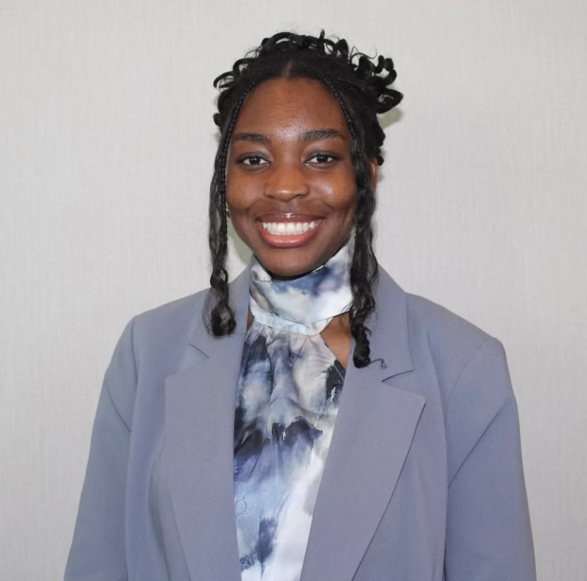
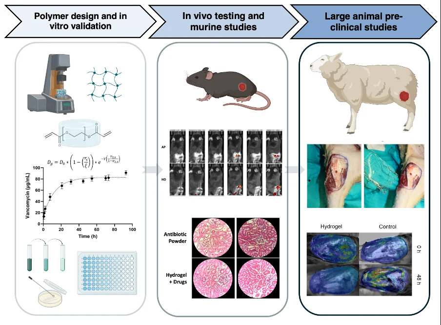
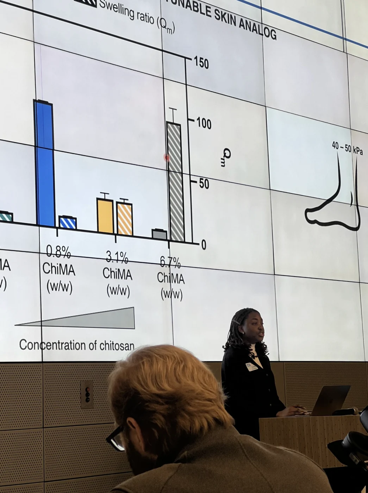
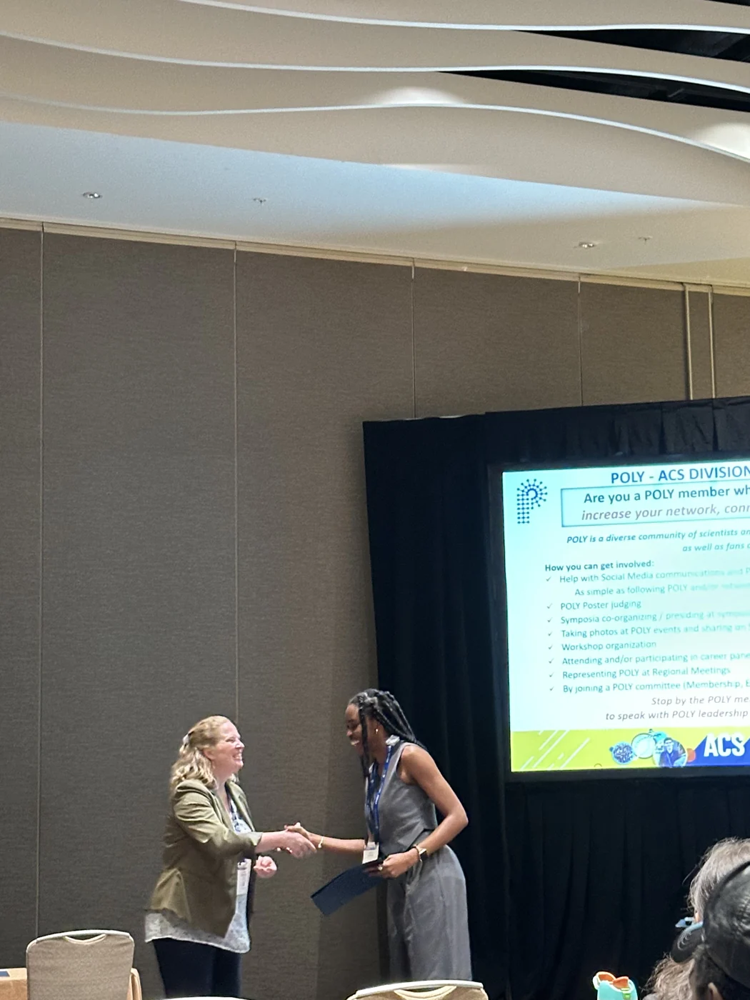
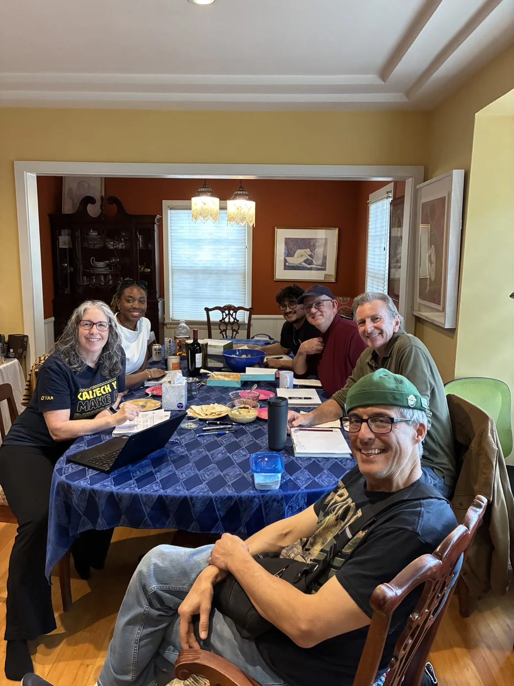
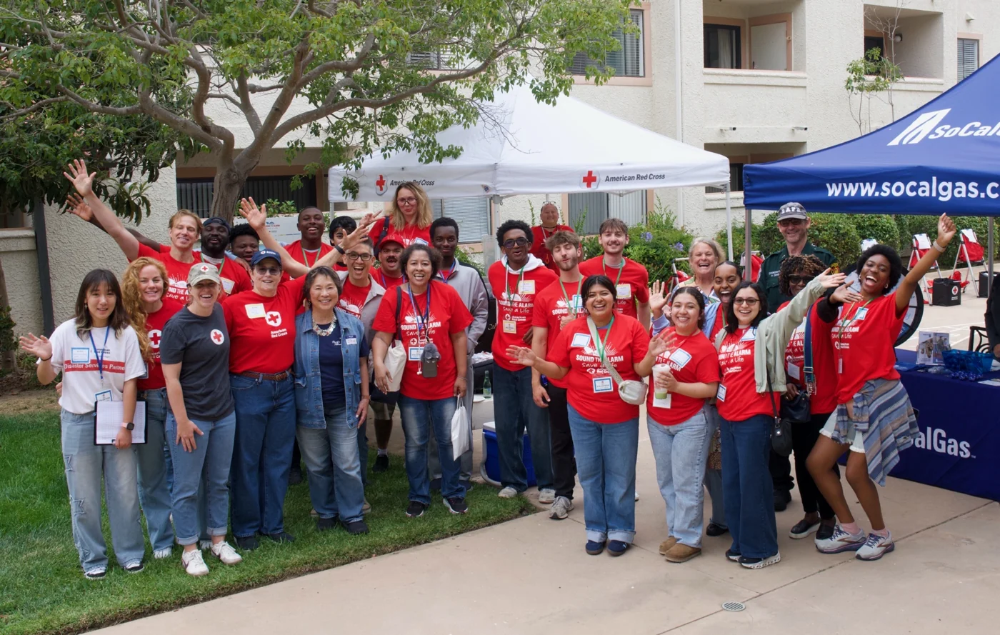

Therapeutic biomaterials
Polymer design and cell-material interactions, with a focus on biodegradable materials and translational therapeutics.
BIOENGINEERING · BIOMATERIALS
Engineering materials.
Advancing human health.
Exploring the intersection of materials science and biology to develop biomaterials for wound care and controlled drug delivery.
01 / ABOUT

I’m Amaka, a bioengineer with a background in microbiology and a focus on therapeutic biomaterials.
I earned my PhD in Bioengineering at UCLA in June 2025. My doctoral dissertation, Biomaterials for Enhanced Care in Sickle Cell Disease and Complex Wounds, brought together polymer chemistry, materials characterization, and translational research.
Alongside research, my work spans teaching, mentoring emerging scientists, and community outreach. I’m interested in how thoughtful materials design can connect scientific discovery with real-world care.
Explore my background ↗EDUCATION
University of California, Los Angeles
University of California, Los Angeles
Covenant University · Ota, Nigeria
02 / RESEARCH
From molecular design to biological application, my interests center on materials that interact with living systems.
Polymer design and cell-material interactions, with a focus on biodegradable materials and translational therapeutics.
Hydrogel systems designed to deliver therapeutic agents over time for applications in wound management.
Materials-based approaches to complex wounds, including sickle cell leg ulcers and traumatic injuries.
03 / PUBLICATIONS
Pumford, Hamad, Enueme et al.
Scientific Reports · 2026 · 16, 6950
Hoffman, B. A. J., Pumford, E. A., Enueme, A. I., Fetah, K. L., Friedl, O. M., & Kasko, A. M.
Trends in Biotechnology · 2023 · 41(9), 1139–1154
Akinnola, O. O., Ajayi, A. S., Ogunleye, B. O., & Enueme, I. N. (2020).
Disinfection by-products in drinking water · Butterworth-Heinemann · pp. 235–252
Multifunctional chitosan hydrogels targeting sickle cell leg ulcers — Enueme & Kasko
DOCTORAL RESEARCH · UCLA
Design, synthesis, and characterization of biodegradable polymer formulations for controlled drug delivery and wound healing.

SELECTED DOCUMENTS
Examples of technical writing and mentorship. Journal articles are listed in Publications.
PROVISIONAL PATENT APPLICATION
Non-confidential application excerpt and summary describing sustained antimicrobial and vasodilatory therapy in sickle cell ulcers.
MENTORSHIP & TEACHING
Workshop slides by Amaka Enueme and Elizabeth Pumford introducing the Kasko Lab and hydrogel wound dressing project.
05 / EXPERIENCE
A background across materials research, scientific reasoning, and hands-on education.

AUG 2025 – PRESENT
Handshake AI
Designing and evaluating biology and materials science research problems to improve AI scientific reasoning.
SEP 2020 – JUN 2025
UCLA
Biomaterial synthesis, mechanical characterization, controlled drug delivery, and mentorship of undergraduate researchers and community college interns.
APR 2021 – JUN 2025
UCLA & UTMB
Developing hydrogel drug delivery platforms with interdisciplinary clinical and engineering collaborators.
2021 – 2025 · SELECTED TERMS
UCLA
Courses in targeted drug delivery, genetics, and developmental biology, with an emphasis on active learning and scientific communication.
06 / HONORS & AWARDS

07 / LEADERSHIP & VOLUNTEERING
Creating space for learning, connection, and service inside and outside the laboratory.


SCIENTIFIC COMMUNITY
Executive Committee Member-at-Large, Southern California Section. Supporting scientific programming, professional development, and engagement.
JAN 2026 – PRESENTCOMMUNITY OUTREACH
Community Outreach Ambassador participating in food distribution, senior home outreach, and annual toy drives.
MAR 2022 – PRESENTSTUDENT ADVOCACY
Service as Director of Internal Affairs and Director of Discretionary Funds, supporting student advocacy and council operations.
2021–202408 / CURRICULUM VITAE
Education, research, publications, teaching, and service in one place.
09 / CONTACT
For research conversations, professional opportunities, or a shared scientific curiosity.
enuemeamaka@gmail.com ↗